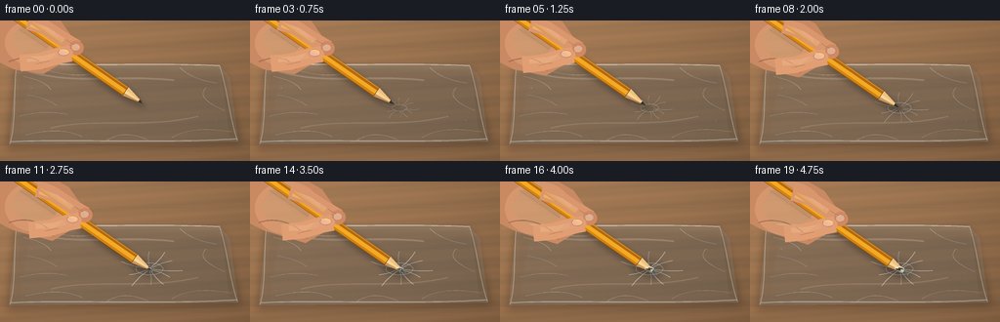
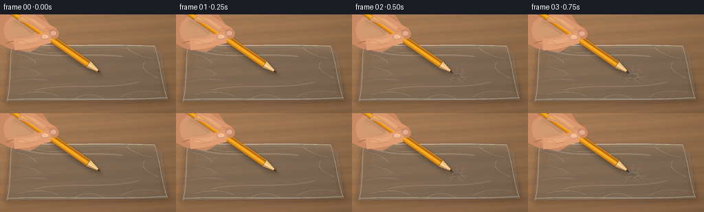
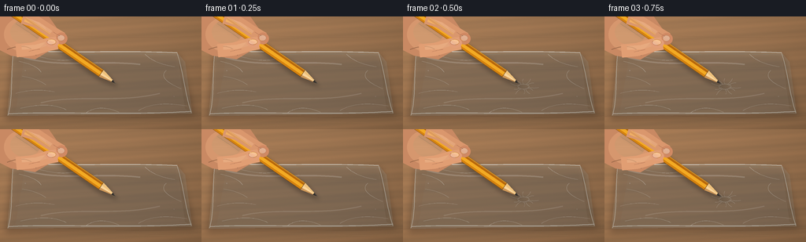

CODING AGENTS AS PIXEL WORLD MODELS
traex/GPT-5.6-Sol · mechanics_0029
点击播放 · 原生 RGB 像素
逐轮保存的候选
回放视频、检查图与代码变化。
每份候选均可单独播放。实际图片检查记录在下方工具轨迹中。
候选 01播放与检查图
点击播放 · 原生 RGB 像素


展开代码变化
--- 上一保存版本
+++ 本次保存版本
@@ -0,0 +1,305 @@
+from pathlib import Path
+import math
+import numpy as np
+from PIL import Image, ImageDraw, ImageFilter
+import artifact_io
+
+# Text-to-video scene rendered procedurally with supersampling.
+W, H, N = 256, 144, 20
+S = 4
+SW, SH = W*S, H*S
+rng = np.random.default_rng(2929)
+
+
+def smstep(x):
+ x = max(0.0, min(1.0, x))
+ return x*x*(3-2*x)
+
+
+def P(xy):
+ return tuple(int(round(v*S)) for v in xy)
+
+
+def poly(draw, pts, fill):
+ draw.polygon([P(q) for q in pts], fill=fill)
+
+
+def ellipse(draw, box, fill, outline=None, width=1):
+ draw.ellipse(P((box[0], box[1], box[2], box[3])), fill=fill,
+ outline=outline, width=max(1, int(width*S)))
+
+
+def line(draw, pts, fill, width=1, joint='curve'):
+ draw.line([P(q) for q in pts], fill=fill, width=max(1, int(width*S)), joint=joint)
+
+
+def bezier(draw, points, fill, width=1, steps=30):
+ # Cubic if four controls, quadratic if three.
+ out = []
+ for i in range(steps+1):
+ t = i/steps
+ if len(points) == 4:
+ a,b,c,d = points
+ x=(1-t)**3*a[0]+3*(1-t)**2*t*b[0]+3*(1-t)*t*t*c[0]+t**3*d[0]
+ y=(1-t)**3*a[1]+3*(1-t)**2*t*b[1]+3*(1-t)*t*t*c[1]+t**3*d[1]
+ else:
+ a,b,c = points
+ x=(1-t)**2*a[0]+2*(1-t)*t*b[0]+t*t*c[0]
+ y=(1-t)**2*a[1]+2*(1-t)*t*b[1]+t*t*c[1]
+ out.append((x,y))
+ line(draw, out, fill, width)
+
+
+def add_layer(base, painter, blur=0):
+ lay = Image.new('RGBA', (SW, SH), (0,0,0,0))
+ painter(ImageDraw.Draw(lay), lay)
+ if blur:
+ lay = lay.filter(ImageFilter.GaussianBlur(blur*S))
+ return Image.alpha_composite(base, lay)
+
+
+def background(frame):
+ yy, xx = np.mgrid[0:SH, 0:SW]
+ # Warm matte wooden worktop with soft upper-left illumination.
+ light = 1.0 - 0.15*(xx/SW) - 0.12*(yy/SH)
+ r = 155*light + 16
+ g = 112*light + 15
+ b = 76*light + 12
+ grain = (4.0*np.sin((yy/13.5)+(xx/185.0)) +
+ 2.0*np.sin((yy/4.8)+(xx/70.0)) +
+ rng.normal(0, 1.0, (SH,SW)))
+ arr = np.stack([r+grain, g+0.60*grain, b+0.35*grain], axis=2)
+ # subtle vignette
+ rad = ((xx-SW*.48)/(SW*.72))**2 + ((yy-SH*.45)/(SH*.86))**2
+ arr -= np.maximum(rad-.20, 0)[...,None]*8
+ return Image.fromarray(np.uint8(np.clip(arr,0,255)), 'RGB').convert('RGBA')
+
+
+def draw_wood_details(im):
+ def paint(d, _):
+ bezier(d, [(-8,24),(66,20),(158,32),(264,24)], (91,58,38,35), .7)
+ bezier(d, [(-5,128),(71,121),(165,135),(263,126)], (80,50,32,46), .9)
+ bezier(d, [(5,132),(83,128),(176,140),(260,133)], (225,177,121,20), .5)
+ for y, a in [(63,18),(66,13),(101,15)]:
+ bezier(d, [(-5,y),(74,y-5),(170,y+7),(264,y-1)], (74,47,32,a), .55)
+ return add_layer(im, paint)
+
+
+def draw_bag(im, press, puncture, C):
+ bag = [(17,43),(225,46),(244,124),(9,127)]
+ # Broad contact shadow under clear film.
+ im = add_layer(im, lambda d,l: poly(d, [(15,48),(228,50),(247,126),(7,132)], (35,25,19,72)), 4.2)
+ # Clear film body: a faint cool tint allows the wood to show through.
+ def film(d, _):
+ poly(d, bag, (205,235,242,30))
+ # Slightly denser folded corners.
+ poly(d, [(17,43),(31,51),(19,124),(9,127)], (220,246,250,25))
+ poly(d, [(225,46),(235,58),(244,124),(235,118)], (180,220,232,23))
+ im = add_layer(im, film)
+
+ # Surface shading at the elastic dimple before/around penetration.
+ if press > .01:
+ def depression(d, _):
+ cx,cy=C
+ rx=5+12*press; ry=3+7*press
+ ellipse(d,(cx-rx,cy-ry,cx+rx,cy+ry),(25,43,47,int(20+24*press)))
+ im = add_layer(im, depression, 3.2)
+
+ def seams(d, _):
+ # top doubled seam / opening and side welds
+ bezier(d, [(18,43),(76,47),(163,43),(225,46)], (245,253,253,145), 1.15)
+ bezier(d, [(19,46),(79,50),(166,46),(227,49)], (100,151,163,60), .65)
+ bezier(d, [(11,124),(65,121),(169,126),(243,121)], (239,250,251,115), 1.0)
+ bezier(d, [(17,44),(13,73),(17,103),(10,126)], (238,252,253,100), .9)
+ bezier(d, [(225,47),(233,72),(235,99),(243,123)], (238,252,253,100), .9)
+ # stationary crinkles in the loose plastic
+ wrinkles = [
+ [(24,57),(47,62),(52,71)], [(20,98),(44,91),(69,96)],
+ [(44,49),(72,59),(97,54)], [(90,49),(105,61),(124,58)],
+ [(184,48),(196,60),(222,64)], [(211,69),(199,79),(230,92)],
+ [(26,117),(63,108),(84,119)], [(176,120),(196,107),(237,114)],
+ [(109,123),(126,111),(151,122)], [(28,76),(47,79),(58,87)]
+ ]
+ for i,q in enumerate(wrinkles):
+ bezier(d, q, (246,255,255,70 if i%2 else 90), .6)
+ if i%3==0:
+ off=[(x,y+1.3) for x,y in q]
+ bezier(d, off, (51,93,103,28), .45)
+ # characteristic broad specular ribbons
+ bezier(d, [(30,52),(75,66),(125,55),(178,61)], (255,255,255,42), 2.0)
+ bezier(d, [(52,110),(97,99),(147,111),(203,98)], (255,255,255,30), 1.6)
+ im = add_layer(im, seams)
+
+ # Dynamic radial wrinkles converge on the contact point as the film stretches.
+ if press > .03:
+ def dynamic(d, _):
+ cx,cy=C
+ angles=[-2.75,-2.20,-1.58,-1.05,-.52,.08,.58,1.05,1.52,2.15,2.72]
+ lengths=[31,24,28,32,27,34,25,29,26,33,23]
+ for j,(ang,L) in enumerate(zip(angles,lengths)):
+ L=L*(.55+.45*press)
+ sx=cx+math.cos(ang)*(3.5+2*(1-press))
+ sy=cy+math.sin(ang)*(2.4+1*(1-press))
+ ex=cx+math.cos(ang)*L
+ ey=cy+math.sin(ang)*L*.63
+ bend=(1 if j%2 else -1)*2.0
+ mx=(sx+ex)/2-math.sin(ang)*bend
+ my=(sy+ey)/2+math.cos(ang)*bend
+ bezier(d,[(sx,sy),(mx,my),(ex,ey)],(252,255,255,int(45+62*press)),.55+.22*press)
+ # shadow edge gives each crease depth
+ bezier(d,[(sx,sy+1),(mx,my+1),(ex,ey+1)],(44,76,82,int(18+23*press)),.40)
+ # compressed oval highlight around the dimple
+ ellipse(d,(cx-7-7*press,cy-3.2-3*press,cx+7+7*press,cy+3.2+3*press),
+ None,(246,255,255,int(55+55*press)),.65)
+ im=add_layer(im,dynamic)
+ return im
+
+
+def vec_add(a,b,k=1): return (a[0]+b[0]*k,a[1]+b[1]*k)
+
+def draw_pencil_shadow(im, E, u, n):
+ rear=vec_add(E,u,-178); wb=vec_add(E,u,-23)
+ pts=[vec_add(rear,n,5.8),vec_add(wb,n,5.8),E,vec_add(wb,n,-5.8),vec_add(rear,n,-5.8)]
+ return add_layer(im, lambda d,l: poly(d,[(x+3.2,y+5.0) for x,y in pts],(25,19,14,85)),2.8)
+
+
+def pencil_layer(E, u, n):
+ lay=Image.new('RGBA',(SW,SH),(0,0,0,0)); d=ImageDraw.Draw(lay)
+ rear=vec_add(E,u,-182); wb=vec_add(E,u,-23)
+ # hexagonal lacquered shaft with three tonal facets
+ poly(d,[vec_add(rear,n,-5.3),vec_add(wb,n,-5.3),vec_add(wb,n,-1.7),vec_add(rear,n,-1.7)],(184,104,11,255))
+ poly(d,[vec_add(rear,n,-1.7),vec_add(wb,n,-1.7),vec_add(wb,n,2.4),vec_add(rear,n,2.4)],(243,170,35,255))
+ poly(d,[vec_add(rear,n,2.4),vec_add(wb,n,2.4),vec_add(wb,n,5.3),vec_add(rear,n,5.3)],(213,130,15,255))
+ line(d,[vec_add(rear,n,-4.6),vec_add(wb,n,-4.6)],(255,213,77,180),.65)
+ line(d,[vec_add(rear,n,5.0),vec_add(wb,n,5.0)],(93,53,9,150),.7)
+ # exposed sharpened wood, with distinct grain facets
+ poly(d,[vec_add(wb,n,-5.3),vec_add(wb,n,-1.2),E],(239,194,125,255))
+ poly(d,[vec_add(wb,n,-1.2),vec_add(wb,n,2.3),E],(250,213,154,255))
+ poly(d,[vec_add(wb,n,2.3),vec_add(wb,n,5.3),E],(204,150,88,255))
+ # small lacquer-to-wood boundary
+ line(d,[vec_add(wb,n,-5.3),vec_add(wb,n,5.3)],(116,65,14,170),.65)
+ # graphite point, aligned along final 6 px
+ gb=vec_add(E,u,-6.0)
+ poly(d,[vec_add(gb,n,-1.45),E,vec_add(gb,n,1.45)],(37,35,34,255))
+ line(d,[vec_add(gb,n,-.55),E],(87,83,78,220),.5)
+ return lay
+
+
+def hand_layers(im, E, u, n):
+ # Grip moves with the pencil, preserving convincing contact.
+ G=vec_add(E,u,-97)
+ dx=G[0]-70; dy=G[1]-34
+ # hand/palm behind pencil
+ def back(d, _):
+ # wrist and palm silhouette entering upper left
+ poly(d,[(-8,-8),(46,-8),(64+dx,3+dy),(78+dx,23+dy),(69+dx,45+dy),
+ (47+dx,58+dy),(14,50),(-8,39)],(201,137,99,255))
+ ellipse(d,(5,0,62+dx,49+dy),(214,151,110,255))
+ # soft palm planes
+ ellipse(d,(13,4,54+dx,39+dy),(231,170,126,165))
+ bezier(d,[(9,42),(29,34),(44+dx,42+dy),(48+dx,53+dy)],(139,82,59,115),1.0)
+ bezier(d,[(20,9),(37,20),(50+dx,31+dy)],(247,195,152,95),1.0)
+ im=add_layer(im,back)
+ return im, (dx,dy)
+
+
+def draw_front_fingers(im, shift):
+ dx,dy=shift
+ # fingers over pencil, modelled with rounded thick strokes and highlight strips
+ def fingers(d, _):
+ # index finger curls over the upper side of the shaft
+ pts=[(31+dx,5+dy),(48+dx,10+dy),(66+dx,22+dy),(81+dx,31+dy)]
+ line(d,pts,(218,151,109,255),15.5)
+ line(d,[(34+dx,7+dy),(50+dx,13+dy),(67+dx,24+dy)],(240,179,134,170),6.2)
+ ellipse(d,(73+dx,24+dy,88+dx,39+dy),(208,137,99,255))
+ # index nail catches the light near the curled end
+ ellipse(d,(75.5+dx,27+dy,84.5+dx,34.5+dy),(240,186,156,210),(160,102,82,120),.45)
+ bezier(d,[(76+dx,27.5+dy),(80+dx,29+dy),(84+dx,31+dy)],(255,223,199,155),.7)
+ # thumb comes from below and pins the pencil
+ line(d,[(23+dx,47+dy),(43+dx,45+dy),(64+dx,39+dy),(75+dx,37+dy)],(225,158,115,255),17)
+ line(d,[(30+dx,43+dy),(48+dx,42+dy),(64+dx,37.5+dy)],(243,183,139,150),5.5)
+ ellipse(d,(60+dx,31+dy,77+dx,43+dy),(226,158,120,255))
+ # thumbnail
+ ellipse(d,(62+dx,32.2+dy,73.5+dx,39.6+dy),(245,193,164,225),(165,103,82,130),.5)
+ bezier(d,[(63+dx,33+dy),(67+dx,32.8+dy),(72+dx,35+dy)],(255,229,210,150),.65)
+ # grip creases
+ bezier(d,[(39+dx,48+dy),(47+dx,46+dy),(53+dx,45+dy)],(145,86,64,100),.65)
+ bezier(d,[(70+dx,23+dy),(74+dx,26+dy),(78+dx,28+dy)],(151,92,69,95),.6)
+ return add_layer(im,fingers)
+
+
+def penetration_details(im, C, E, puncture, u, n):
+ if puncture <= 0:
+ return im
+ # Cool transparent veil on the part of the tip that is now beneath the membrane.
+ def veil(d, _):
+ end=E
+ start=vec_add(C,u,-1.0)
+ w=2.2+1.3*puncture
+ poly(d,[vec_add(start,n,-w),vec_add(end,n,-.7),vec_add(end,n,.7),vec_add(start,n,w)],
+ (173,219,230,int(35+30*puncture)))
+ im=add_layer(im,veil)
+
+ def hole(d, _):
+ cx,cy=C
+ rx=1.1+2.6*puncture; ry=.75+1.35*puncture
+ # dark slit sits across the pencil axis, with a crisp torn rim
+ ellipse(d,(cx-rx,cy-ry,cx+rx,cy+ry),(31,35,34,int(130+90*puncture)))
+ # top and lower lips of stretched plastic
+ bezier(d,[(cx-rx-1,cy-.5),(cx,cy-ry-1.1),(cx+rx+1,cy-.25)],
+ (255,255,255,int(125+75*puncture)),.75)
+ bezier(d,[(cx-rx,cy+.55),(cx,cy+ry+1),(cx+rx,cy+.35)],
+ (69,96,101,int(75+50*puncture)),.65)
+ # tiny triangular film flaps become visible after breakthrough
+ if puncture>.42:
+ flap=(puncture-.42)/.58
+ poly(d,[(cx-1.0,cy-1),(cx-5.0*flap,cy-4.0*flap),(cx-2.2,cy+.1)],
+ (230,250,252,int(70+55*flap)))
+ poly(d,[(cx+1.0,cy+1),(cx+4.6*flap,cy+3.2*flap),(cx+2.0,cy-.1)],
+ (145,195,205,int(55+45*flap)))
+ return add_layer(im,hole)
+
+
+def render_frame(i):
+ t=i/(N-1)
+ # Deliberate eased push: early contact, taut indentation, then breakthrough.
+ advance=smstep(t)
+ C=(153.0,89.5)
+ u=np.array([0.823,0.568],dtype=float); u/=np.linalg.norm(u)
+ n=np.array([-u[1],u[0]])
+ u=tuple(u); n=tuple(n)
+ E=vec_add(C,u,-7.0+18.0*advance)
+ press=smstep((t-.04)/.58)
+ puncture=smstep((t-.52)/.43)
+
+ im=background(i)
+ im=draw_wood_details(im)
+ im=draw_bag(im,press,puncture,C)
+ im=draw_pencil_shadow(im,E,u,n)
+ im,shift=hand_layers(im,E,u,n)
+ pencil=pencil_layer(E,u,n)
+ im=Image.alpha_composite(im,pencil)
+ im=draw_front_fingers(im,shift)
+ im=penetration_details(im,C,E,puncture,u,n)
+
+ # Sparse floating highlights make the plastic read as glossy without clutter.
+ def glints(d, _):
+ a=int(35+15*math.sin(i*.37))
+ ellipse(d,(31,68,33,70),(255,255,255,a))
+ ellipse(d,(220,101,222,103),(255,255,255,a//2))
+ im=add_layer(im,glints,.35)
+
+ rgb=im.convert('RGB').resize((W,H),Image.Resampling.LANCZOS)
+ return np.asarray(rgb,dtype=np.uint8)
+
+
+def main():
+ frames=np.stack([render_frame(i) for i in range(N)],axis=0)
+ case_dir=Path(__file__).resolve().parent
+ artifact_io.save(frames,case_dir)
+ print('saved',frames.shape,frames.dtype,'range',frames.min(),frames.max())
+ diffs=np.mean(np.abs(frames[1:].astype(np.int16)-frames[:-1].astype(np.int16)),axis=(1,2,3))
+ print('mean consecutive RGB deltas:',np.round(diffs,3).tolist())
+
+if __name__=='__main__':
+ main()
候选 02播放与检查图
点击播放 · 原生 RGB 像素

展开代码变化
--- 上一保存版本
+++ 本次保存版本
@@ -9,6 +9,7 @@
S = 4
SW, SH = W*S, H*S
rng = np.random.default_rng(2929)
+FIXED_NOISE = rng.normal(0, 1.0, (SH, SW))
def smstep(x):
@@ -67,12 +68,12 @@
b = 76*light + 12
grain = (4.0*np.sin((yy/13.5)+(xx/185.0)) +
2.0*np.sin((yy/4.8)+(xx/70.0)) +
- rng.normal(0, 1.0, (SH,SW)))
+ FIXED_NOISE)
arr = np.stack([r+grain, g+0.60*grain, b+0.35*grain], axis=2)
# subtle vignette
rad = ((xx-SW*.48)/(SW*.72))**2 + ((yy-SH*.45)/(SH*.86))**2
arr -= np.maximum(rad-.20, 0)[...,None]*8
- return Image.fromarray(np.uint8(np.clip(arr,0,255)), 'RGB').convert('RGBA')
+ return Image.fromarray(np.uint8(np.clip(arr,0,255))).convert('RGBA')
def draw_wood_details(im):
可观测工具轨迹
实际执行的命令与返回图片。
命令 1exit 0
/bin/bash -lc "cat prompt.txt && printf '\\n--- GENERATION_RULES.md ---\\n' && cat GENERATION_RULES.md"
命令 2exit 0
/bin/bash -lc "cat task_spec.json && printf '\\n--- files ---\\n' && find . -maxdepth 2 -type f -printf '%p\\n' | sort"
命令 3exit 0
/bin/bash -lc "command -v ffmpeg || true; command -v python3 || true; python3 - <<'PY' mods=['PIL','numpy','cv2','imageio','matplotlib'] for m in mods: try: x=__import__(m); print(m, getattr(x,'__version__','ok')) except Exception as e: print(m,'MISSING',e) PY"
命令 4exit 0
/bin/bash -lc "sed -n '1,260p' artifact_io.py"
命令 5exit 0
/bin/bash -lc 'find /usr/share/fonts/truetype -type f | head -40'
命令 6exit 0
/bin/bash -lc "cat > generate.py <<'PY'
from pathlib import Path
import math
import numpy as np
from PIL import Image, ImageDraw, ImageFilter
import artifact_io
# Text-to-video scene rendered procedurally with supersampling.
W, H, N = 256, 144, 20
S = 4
SW, SH = W*S, H*S
rng = np.random.default_rng(2929)
def smstep(x):
x = max(0.0, min(1.0, x))
return x*x*(3-2*x)
def P(xy):
return tuple(int(round(v*S)) for v in xy)
def poly(draw, pts, fill):
draw.polygon([P(q) for q in pts], fill=fill)
def ellipse(draw, box, fill, outline=None, width=1):
draw.ellipse(P((box[0], box[1], box[2], box[3])), fill=fill,
outline=outline, width=max(1, int(width*S)))
def line(draw, pts, fill, width=1, joint='curve'):
draw.line([P(q) for q in pts], fill=fill, width=max(1, int(width*S)), joint=joint)
def bezier(draw, points, fill, width=1, steps=30):
# Cubic if four controls, quadratic if three.
out = []
for i in range(steps+1):
t = i/steps
if len(points) == 4:
a,b,c,d = points
x=(1-t)**3*a[0]+3*(1-t)**2*t*b[0]+3*(1-t)*t*t*c[0]+t**3*d[0]
y=(1-t)**3*a[1]+3*(1-t)**2*t*b[1]+3*(1-t)*t*t*c[1]+t**3*d[1]
else:
a,b,c = points
x=(1-t)**2*a[0]+2*(1-t)*t*b[0]+t*t*c[0]
y=(1-t)**2*a[1]+2*(1-t)*t*b[1]+t*t*c[1]
out.append((x,y))
line(draw, out, fill, width)
def add_layer(base, painter, blur=0):
lay = Image.new('RGBA', (SW, SH), (0,0,0,0))
painter(ImageDraw.Draw(lay), lay)
if blur:
lay = lay.filter(ImageFilter.GaussianBlur(blur*S))
return Image.alpha_composite(base, lay)
def background(frame):
yy, xx = np.mgrid[0:SH, 0:SW]
# Warm matte wooden worktop with soft upper-left illumination.
light = 1.0 - 0.15*(xx/SW) - 0.12*(yy/SH)
r = 155*light + 16
g = 112*light + 15
b = 76*light + 12
grain = (4.0*np.sin((yy/13.5)+(xx/185.0)) +
2.0*np.sin((yy/4.8)+(xx/70.0)) +
rng.normal(0, 1.0, (SH,SW)))
arr = np.stack([r+grain, g+0.60*grain, b+0.35*grain], axis=2)
# subtle vignette
rad = ((xx-SW*.48)/(SW*.72))**2 + ((yy-SH*.45)/(SH*.86))**2
arr -= np.maximum(rad-.20, 0)[...,None]*8
return Image.fromarray(np.uint8(np.clip(arr,0,255)), 'RGB').convert('RGBA')
def draw_wood_details(im):
def paint(d, _):
bezier(d, [(-8,24),(66,20),(158,32),(264,24)], (91,58,38,35), .7)
bezier(d, [(-5,128),(71,121),(165,135),(263,126)], (80,50,32,46), .9)
bezier(d, [(5,132),(83,128),(176,140),(260,133)], (225,177,121,20), .5)
for y, a in [(63,18),(66,13),(101,15)]:
bezier(d, [(-5,y),(74,y-5),(170,y+7),(264,y-1)], (74,47,32,a), .55)
return add_layer(im, paint)
def draw_bag(im, press, puncture, C):
bag = [(17,43),(225,46),(244,124),(9,127)]
# Broad contact shadow under clear film.
im = add_layer(im, lambda d,l: poly(d, [(15,48),(228,50),(247,126),(7,132)], (35,25,19,72)), 4.2)
# Clear film body: a faint cool tint allows the wood to show through.
def film(d, _):
poly(d, bag, (205,235,242,30))
# Slightly denser folded corners.
poly(d, [(17,43),(31,51),(19,124),(9,127)], (220,246,250,25))
poly(d, [(225,46),(235,58),(244,124),(235,118)], (180,220,232,23))
im = add_layer(im, film)
# Surface shading at the elastic dimple before/around penetration.
if press > .01:
def depression(d, _):
cx,cy=C
rx=5+12*press; ry=3+7*press
ellipse(d,(cx-rx,cy-ry,cx+rx,cy+ry),(25,43,47,int(20+24*press)))
im = add_layer(im, depression, 3.2)
def seams(d, _):
# top doubled seam / opening and side welds
bezier(d, [(18,43),(76,47),(163,43),(225,46)], (245,253,253,145), 1.15)
bezier(d, [(19,46),(79,50),(166,46),(227,49)], (100,151,163,60), .65)
bezier(d, [(11,124),(65,121),(169,126),(243,121)], (239,250,251,115), 1.0)
bezier(d, [(17,44),(13,73),(17,103),(10,126)], (238,252,253,100), .9)
bezier(d, [(225,47),(233,72),(235,99),(243,123)], (238,252,253,100), .9)
# stationary crinkles in the loose plastic
wrinkles = [
[(24,57),(47,62),(52,71)], [(20,98),(44,91),(69,96)],
[(44,49),(72,59),(97,54)], [(90,49),(105,61),(124,58)],
[(184,48),(196,60),(222,64)], [(211,69),(199,79),(230,92)],
[(26,117),(63,108),(84,119)], [(176,120),(196,107),(237,114)],
[(109,123),(126,111),(151,122)], [(28,76),(47,79),(58,87)]
]
for i,q in enumerate(wrinkles):
bezier(d, q, (246,255,255,70 if i%2 else 90), .6)
if i%3==0:
off=[(x,y+1.3) for x,y in q]
bezier(d, off, (51,93,103,28), .45)
# characteristic broad specular ribbons
bezier(d, [(30,52),(75,66),(125,55),(178,61)], (255,255,255,42), 2.0)
bezier(d, [(52,110),(97,99),(147,111),(203,98)], (255,255,255,30), 1.6)
im = add_layer(im, seams)
# Dynamic radial wrinkles converge on the contact point as the film stretches.
if press > .03:
def dynamic(d, _):
cx,cy=C
angles=[-2.75,-2.20,-1.58,-1.05,-.52,.08,.58,1.05,1.52,2.15,2.72]
lengths=[31,24,28,32,27,34,25,29,26,33,23]
for j,(ang,L) in enumerate(zip(angles,lengths)):
L=L*(.55+.45*press)
sx=cx+math.cos(ang)*(3.5+2*(1-press))
sy=cy+math.sin(ang)*(2.4+1*(1-press))
ex=cx+math.cos(ang)*L
ey=cy+math.sin(ang)*L*.63
bend=(1 if j%2 else -1)*2.0
mx=(sx+ex)/2-math.sin(ang)*bend
my=(sy+ey)/2+math.cos(ang)*bend
bezier(d,[(sx,sy),(mx,my),(ex,ey)],(252,255,255,int(45+62*press)),.55+.22*press)
# shadow edge gives each crease depth
bezier(d,[(sx,sy+1),(mx,my+1),(ex,ey+1)],(44,76,82,int(18+23*press)),.40)
# compressed oval highlight around the dimple
ellipse(d,(cx-7-7*press,cy-3.2-3*press,cx+7+7*press,cy+3.2+3*press),
None,(246,255,255,int(55+55*press)),.65)
im=add_layer(im,dynamic)
return im
def vec_add(a,b,k=1): return (a[0]+b[0]*k,a[1]+b[1]*k)
def draw_pencil_shadow(im, E, u, n):
rear=vec_add(E,u,-178); wb=vec_add(E,u,-23)
pts=[vec_add(rear,n,5.8),vec_add(wb,n,5.8),E,vec_add(wb,n,-5.8),vec_add(rear,n,-5.8)]
return add_layer(im, lambda d,l: poly(d,[(x+3.2,y+5.0) for x,y in pts],(25,19,14,85)),2.8)
def pencil_layer(E, u, n):
lay=Image.new('RGBA',(SW,SH),(0,0,0,0)); d=ImageDraw.Draw(lay)
rear=vec_add(E,u,-182); wb=vec_add(E,u,-23)
# hexagonal lacquered shaft with three tonal facets
poly(d,[vec_add(rear,n,-5.3),vec_add(wb,n,-5.3),vec_add(wb,n,-1.7),vec_add(rear,n,-1.7)],(184,104,11,255))
poly(d,[vec_add(rear,n,-1.7),vec_add(wb,n,-1.7),vec_add(wb,n,2.4),vec_add(rear,n,2.4)],(243,170,35,255))
poly(d,[vec_add(rear,n,2.4),vec_add(wb,n,2.4),vec_add(wb,n,5.3),vec_add(rear,n,5.3)],(213,130,15,255))
line(d,[vec_add(rear,n,-4.6),vec_add(wb,n,-4.6)],(255,213,77,180),.65)
line(d,[vec_add(rear,n,5.0),vec_add(wb,n,5.0)],(93,53,9,150),.7)
# exposed sharpened wood, with distinct grain facets
poly(d,[vec_add(wb,n,-5.3),vec_add(wb,n,-1.2),E],(239,194,125,255))
poly(d,[vec_add(wb,n,-1.2),vec_add(wb,n,2.3),E],(250,213,154,255))
poly(d,[vec_add(wb,n,2.3),vec_add(wb,n,5.3),E],(204,150,88,255))
# small lacquer-to-wood boundary
line(d,[vec_add(wb,n,-5.3),vec_add(wb,n,5.3)],(116,65,14,170),.65)
# graphite point, aligned along final 6 px
gb=vec_add(E,u,-6.0)
poly(d,[vec_add(gb,n,-1.45),E,vec_add(gb,n,1.45)],(37,35,34,255))
line(d,[vec_add(gb,n,-.55),E],(87,83,78,220),.5)
return lay
def hand_layers(im, E, u, n):
# Grip moves with the pencil, preserving convincing contact.
G=vec_add(E,u,-97)
dx=G[0]-70; dy=G[1]-34
# hand/palm behind pencil
def back(d, _):
# wrist and palm silhouette entering upper left
poly(d,[(-8,-8),(46,-8),(64+dx,3+dy),(78+dx,23+dy),(69+dx,45+dy),
(47+dx,58+dy),(14,50),(-8,39)],(201,137,99,255))
ellipse(d,(5,0,62+dx,49+dy),(214,151,110,255))
# soft palm planes
ellipse(d,(13,4,54+dx,39+dy),(231,170,126,165))
bezier(d,[(9,42),(29,34),(44+dx,42+dy),(48+dx,53+dy)],(139,82,59,115),1.0)
bezier(d,[(20,9),(37,20),(50+dx,31+dy)],(247,195,152,95),1.0)
im=add_layer(im,back)
return im, (dx,dy)
def draw_front_fingers(im, shift):
dx,dy=shift
# fingers over pencil, modelled with rounded thick strokes and highlight strips
def fingers(d, _):
# index finger curls over the upper side of the shaft
pts=[(31+dx,5+dy),(48+dx,10+dy),(66+dx,22+dy),(81+dx,31+dy)]
line(d,pts,(218,151,109,255),15.5)
line(d,[(34+dx,7+dy),(50+dx,13+dy),(67+dx,24+dy)],(240,179,134,170),6.2)
ellipse(d,(73+dx,24+dy,88+dx,39+dy),(208,137,99,255))
# index nail catches the light near the curled end
ellipse(d,(75.5+dx,27+dy,84.5+dx,34.5+dy),(240,186,156,210),(160,102,82,120),.45)
bezier(d,[(76+dx,27.5+dy),(80+dx,29+dy),(84+dx,31+dy)],(255,223,199,155),.7)
# thumb comes from below and pins the pencil
line(d,[(23+dx,47+dy),(43+dx,45+dy),(64+dx,39+dy),(75+dx,37+dy)],(225,158,115,255),17)
line(d,[(30+dx,43+dy),(48+dx,42+dy),(64+dx,37.5+dy)],(243,183,139,150),5.5)
ellipse(d,(60+dx,31+dy,77+dx,43+dy),(226,158,120,255))
# thumbnail
ellipse(d,(62+dx,32.2+dy,73.5+dx,39.6+dy),(245,193,164,225),(165,103,82,130),.5)
bezier(d,[(63+dx,33+dy),(67+dx,32.8+dy),(72+dx,35+dy)],(255,229,210,150),.65)
# grip creases
bezier(d,[(39+dx,48+dy),(47+dx,46+dy),(53+dx,45+dy)],(145,86,64,100),.65)
bezier(d,[(70+dx,23+dy),(74+dx,26+dy),(78+dx,28+dy)],(151,92,69,95),.6)
return add_layer(im,fingers)
def penetration_details(im, C, E, puncture, u, n):
if puncture <= 0:
return im
# Cool transparent veil on the part of the tip that is now beneath the membrane.
def veil(d, _):
end=E
start=vec_add(C,u,-1.0)
w=2.2+1.3*puncture
poly(d,[vec_add(start,n,-w),vec_add(end,n,-.7),vec_add(end,n,.7),vec_add(start,n,w)],
(173,219,230,int(35+30*puncture)))
im=add_layer(im,veil)
def hole(d, _):
cx,cy=C
rx=1.1+2.6*puncture; ry=.75+1.35*puncture
# dark slit sits across the pencil axis, with a crisp torn rim
ellipse(d,(cx-rx,cy-ry,cx+rx,cy+ry),(31,35,34,int(130+90*puncture)))
# top and lower lips of stretched plastic
bezier(d,[(cx-rx-1,cy-.5),(cx,cy-ry-1.1),(cx+rx+1,cy-.25)],
(255,255,255,int(125+75*puncture)),.75)
bezier(d,[(cx-rx,cy+.55),(cx,cy+ry+1),(cx+rx,cy+.35)],
(69,96,101,int(75+50*puncture)),.65)
# tiny triangular film flaps become visible after breakthrough
if puncture>.42:
flap=(puncture-.42)/.58
poly(d,[(cx-1.0,cy-1),(cx-5.0*flap,cy-4.0*flap),(cx-2.2,cy+.1)],
(230,250,252,int(70+55*flap)))
poly(d,[(cx+1.0,cy+1),(cx+4.6*flap,cy+3.2*flap),(cx+2.0,cy-.1)],
(145,195,205,int(55+45*flap)))
return add_layer(im,hole)
def render_frame(i):
t=i/(N-1)
# Deliberate eased push: early contact, taut indentation, then breakthrough.
advance=smstep(t)
C=(153.0,89.5)
u=np.array([0.823,0.568],dtype=float); u/=np.linalg.norm(u)
n=np.array([-u[1],u[0]])
u=tuple(u); n=tuple(n)
E=vec_add(C,u,-7.0+18.0*advance)
press=smstep((t-.04)/.58)
puncture=smstep((t-.52)/.43)
im=background(i)
im=draw_wood_details(im)
im=draw_bag(im,press,puncture,C)
im=draw_pencil_shadow(im,E,u,n)
im,shift=hand_layers(im,E,u,n)
pencil=pencil_layer(E,u,n)
im=Image.alpha_composite(im,pencil)
im=draw_front_fingers(im,shift)
im=penetration_details(im,C,E,puncture,u,n)
# Sparse floating highlights make the plastic read as glossy without clutter.
def glints(d, _):
a=int(35+15*math.sin(i*.37))
ellipse(d,(31,68,33,70),(255,255,255,a))
ellipse(d,(220,101,222,103),(255,255,255,a//2))
im=add_layer(im,glints,.35)
rgb=im.convert('RGB').resize((W,H),Image.Resampling.LANCZOS)
return np.asarray(rgb,dtype=np.uint8)
def main():
frames=np.stack([render_frame(i) for i in range(N)],axis=0)
case_dir=Path(__file__).resolve().parent
artifact_io.save(frames,case_dir)
print('saved',frames.shape,frames.dtype,'range',frames.min(),frames.max())
diffs=np.mean(np.abs(frames[1:].astype(np.int16)-frames[:-1].astype(np.int16)),axis=(1,2,3))
print('mean consecutive RGB deltas:',np.round(diffs,3).tolist())
if __name__=='__main__':
main()
PY
python3 generate.py
ls -lh pixels.npz inspection.png transition_check.png index.html frames/00.png frames/19.png"命令 7exit 0
/bin/bash -lc "python3 generate.py && python3 - <<'PY'
from pathlib import Path
import json, numpy as np
from PIL import Image
spec=json.loads(Path('task_spec.json').read_text())
fs=sorted(Path('frames').glob('*.png'))
assert len(fs)==spec['frames']==20
for p in fs:
im=Image.open(p)
assert im.mode=='RGB' and im.size==(spec['width'],spec['height']), (p,im.mode,im.size)
z=np.load('pixels.npz')['pixels']
assert z.shape==(144,256,20) and z.dtype==np.uint32, (z.shape,z.dtype)
# Check source regeneration contract and output existence.
for p in ['generate.py','pixels.npz','inspection.png','transition_check.png','index.html']:
assert Path(p).stat().st_size>0,p
# Temporal diagnostics: changed pixels and contact-region evolution.
a=np.stack([np.asarray(Image.open(p),dtype=np.int16) for p in fs])
changed=[float(np.mean(np.any(a[i]"'!=a[i-1],axis=2))) for i in range(1,20)]
print('"'validation: OK')
print('changed-pixel fractions:', [round(x,3) for x in changed])
print('RGB frames:',a.shape,'pixel archive:',z.shape)
PY
sha256sum generate.py pixels.npz | sed 's# # #'"保存候选 2 份；完成命令 7 次；可验证图片返回 0 张。原始 API 响应与完整日志保留在本地。